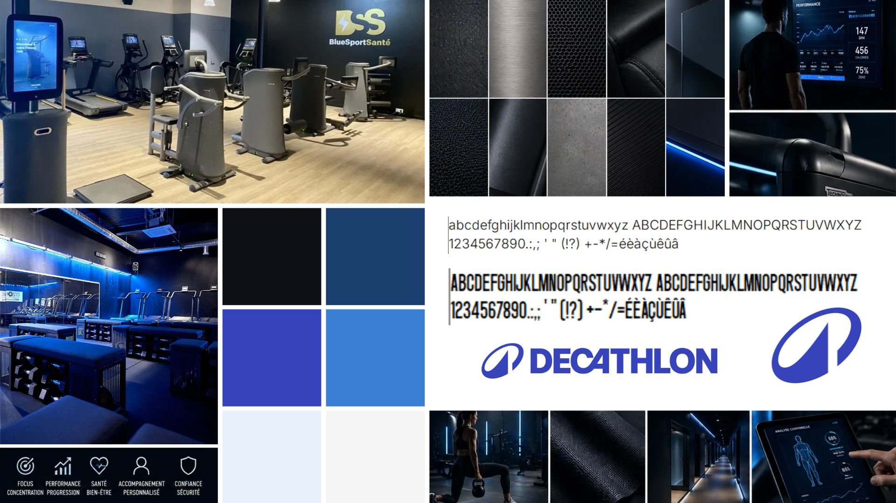
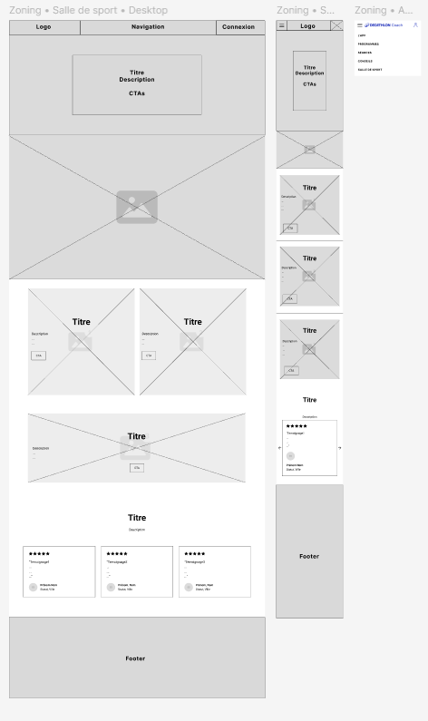
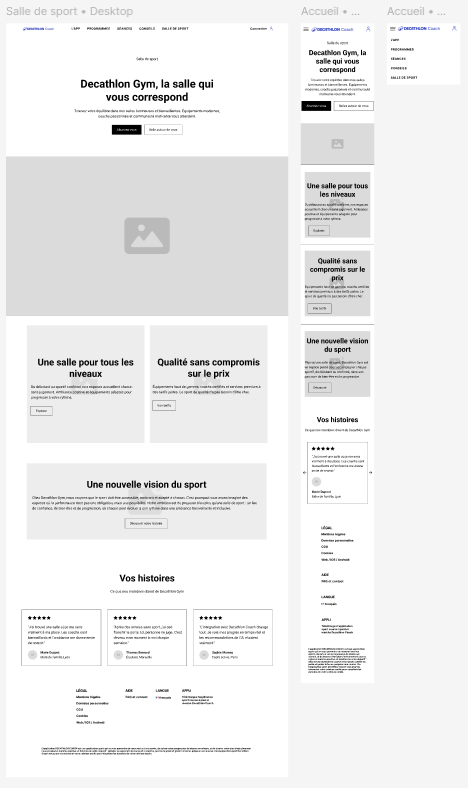
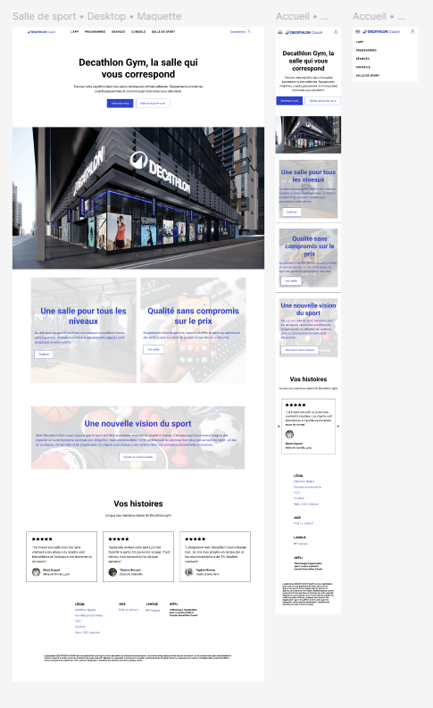
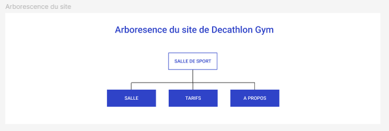
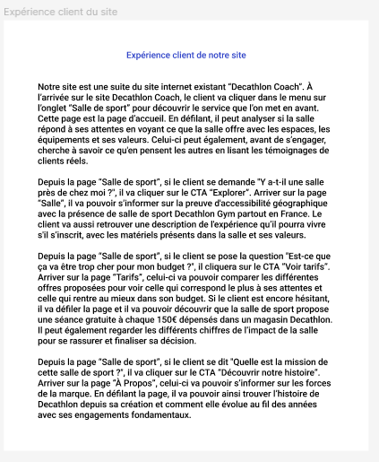
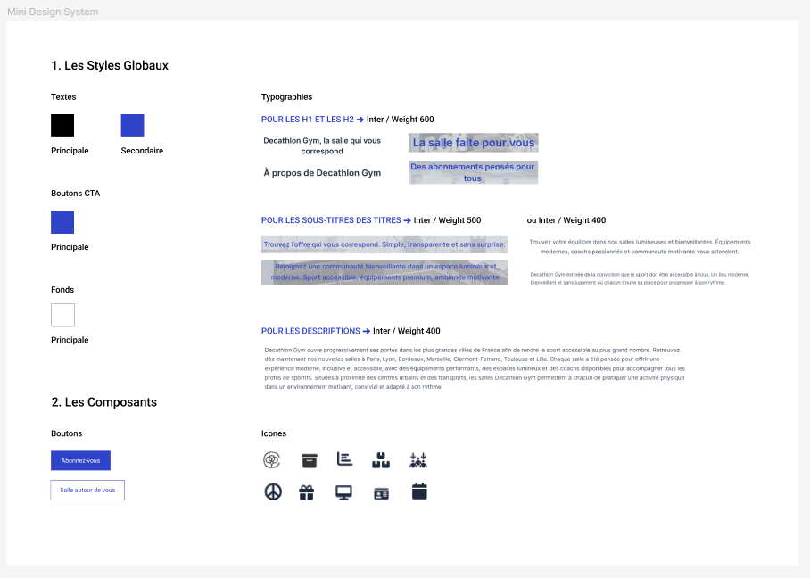
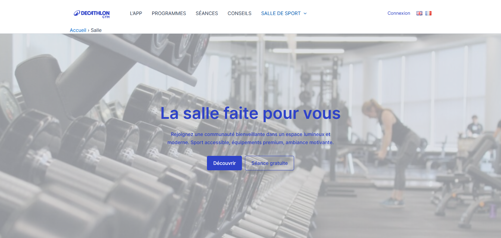
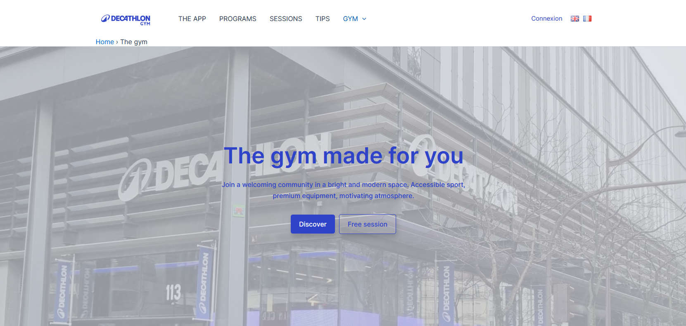

Contexte du projet ✧˖°.
‧˚ʚ Ce projet de groupe consistait à imaginer un produit ou un service innovant pour une marque existante et à concevoir toute sa campagne de lancement. Nous avons créé Decathlon Gym, un réseau de salles de sport éco-conçues et accessibles. L'objectif était de bâtir une stratégie marketing complète et de la décliner sur de nombreux supports : stratégie de communication, planning éditorial, vidéo promotionnelle et site web.
‧˚ʚ Ce projet m'a permis de développer mes compétences en stratégie de communication, en design d'interface (UX/UI) et en gestion de contenu via un CMS (WordPress). J'ai renforcé ma capacité à réaliser un audit marketing rigoureux et à travailler en équipe grâce à des outils collaboratifs comme Figma. Piloter ce projet de bout en bout a validé ma capacité à lier la réflexion stratégique à la production concrète d'une campagne de communication multimédia cohérente.
Démarche & Réalisation ✧˖°.
‧˚ʚ Après l'analyse de la marque, j'ai participé à l'étude marketing en rédigeant le persona principal et en développant l'axe de positionnement éco-responsable. Nous avons planifié une campagne sur cinq canaux (affichage, réseaux sociaux, vidéo, newsletter, web) à l'aide d'un calendrier de publication structuré sur Excel. Pour la partie audiovisuelle, j'ai collaboré à l'écriture du storyboard et me suis occupée de la prise de son pendant le tournage. En parallèle, j'ai conçu sur Figma l'arborescence du site, le parcours utilisateur et un mini design system pour garantir la cohérence visuelle. Enfin, j'ai intégré et construit de A à Z la page "Salle" sur WordPress, tout en adaptant l'ensemble des maquettes en version anglaise.
Rendus ✧˖°.
Vidéo publicitaire finalisée où j'ai réalisé toute la prise de son. Monté sur Adobe Premiere Pro par un membre du groupe.

Moodboard illustrant l'identité visuelle de notre concept : la salle de sport Décathlon. Utilisation de Canva.



J'ai participé à la réalisation des étapes successives de conception de l'interface utilisateur pour la section « Salle de sport » de Décathlon, allant du zoning, au wireframe puis à la maquette finale intégrant les visuels et le design de marque. Utilisation de Figma.



Réalisation de l'arborescence, de l'expérience utilisateur et du design system pour le site de Décathlon Gym. Utilisation de Figma.


Mise en page finale de la page d'accueil de Décathlon Gym, déclinée en version française et en version anglaise. Utilisation de WordPress.